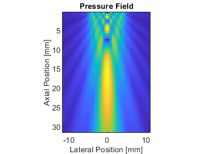
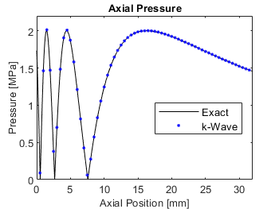
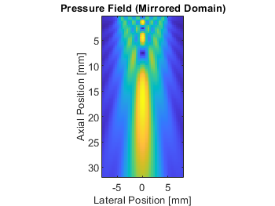
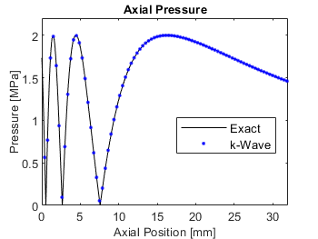
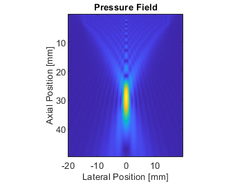
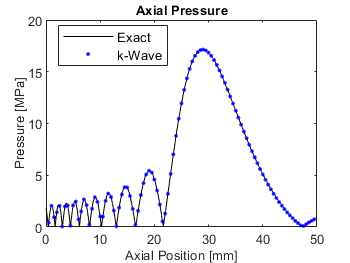
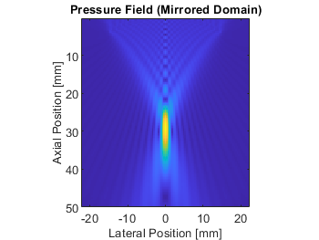
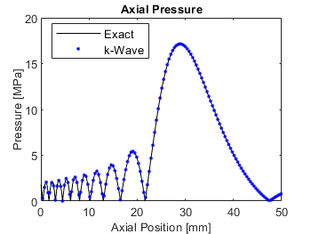
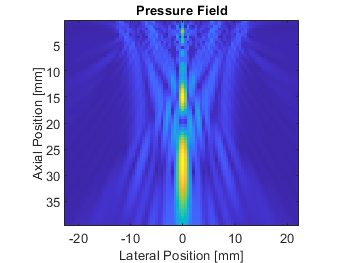
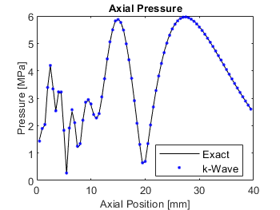

Modelling Plane Piston And Focused Bowl Transducers Example
This example shows how to model plane piston and focused bowl transducers using the kWaveArray class. It builds on the Defining A Source Using An Array Transducer Example.
Contents
Overview
As outlined in the Defining A Source Using An Array Transducer Example, the kWaveArray class allows transducer geometries to be accurately defined on a regular Cartesian grid without staircasing. This example gives five different demonstrations of defining a source and comparing the simulation output with an analytical solution. Each example can be run or opened by selecting the corresponding "Open the file..." and "Run the file..." links below. The examples also have the option to run on a GPU or using the compiled C++/CUDA codes.
For each example, the transducer geometry is defined using the appropriate add...Element methods. For simulations in 3D, the piston and bowl elements are defined using the addDiscElement and addBowlElement methods. For axisymmetric simulations, only one radial line through the piston and bowl needs to be defined, so the addLineElement and addArcElement methods are used. The inputs for source.p_mask and source.p are then created using the getArrayBinaryMask and getDistributedSourceSignal methods as described in the Defining A Source Using An Array Transducer Example.
The examples use a single-frequency continuous-wave (CW) sinusoidal source defined using createCWSignals. To allow the accurate extraction of the pressure amplitude after the simulation, the time step is set to be an integer number of points per period. The pressure field is then recorded for an integer number of periods when the field has reached steady state. This allows the amplitude to be accurately extracted using the Fourier transform via extractAmpPhase. The grid size is automatically calculated based on the physical domain size and the desired number of points per wavelength (PPW) at the driving frequency.
% calculate the grid spacing based on the PPW and F0 dx = c0 / (ppw * source_f0); % [m] % compute the size of the grid Nx = roundEven(axial_size / dx); Ny = roundEven(lateral_size / dx); Nz = Ny; % create the computational grid kgrid = kWaveGrid(Nx, dx, Ny, dx, Nz, dx); % compute points per temporal period PPP = round(ppw / cfl); % compute corresponding time spacing dt = 1 / (PPP * source_f0); % create the time array using an integer number of points per period Nt = round(t_end / dt); kgrid.setTime(Nt, dt); ... % record only the final few periods when the field is in steady state sensor.record_start_index = kgrid.Nt - record_periods * PPP + 1; ... % extract amplitude from the sensor data amp = extractAmpPhase(sensor_data.p, 1/kgrid.dt, source_f0, ... 'Dim', 2, 'Window', 'Rectangular', 'FFTPadding', 1);
The 3D simulations are set to use 3 points per wavelength, and the axisymmetric simulations to 4 points per wavelength. Even with this very low grid sampling, there is close agreement between the simulation outputs and the corresponding analytical solutions. If higher accuracy is required, this can be achieved by:
- Increasing the number of points per wavelength (set by
ppw). - Decreasing the BLI tolerance (set by
bli_tolerance). A lower BLI tolerance increases the size of the corresponding source mask. - Increasing the density of integration points (set by
upsampling_rate). This increases the number of off-grid points used to represent the source geometry.
Convergence plots for each of these parameters are given in [2].
Modelling A Circular Plane Piston Transducer In 3D
This example models a circular piston transducer in 3D. The on-axis pressure is compared with the analytical expression from [1].
 
Modelling A Circular Plane Piston Transducer Assuming Axisymmetry
This example models a circular piston transducer assuming axisymmetry. The on-axis pressure is compared with the analytical expression from [1]. Compared to the 3D simulation, a lower CFL (which gives a smaller time step) is used, as the k-space correction for the axisymmetric code is not exact in the radial direction.
 
Modelling A Focused Bowl Transducer In 3D
This example models a focused bowl transducer in 3D. The on-axis pressure is compared with the exact solution calculated using focusedBowlONeil.
 
Modelling A Focused Bowl Transducer Assuming Axisymmetry
This example models a focused bowl transducer assuming axisymmetry. The on-axis pressure is compared with the exact solution calculated using focusedBowlONeil.
 
Modelling A Focused Annular Array Transducer In 3D
This example models a focused annular array transducer in 3D. The on-axis pressure is compared with the exact solution calculated using focusedAnnulusONeil.
 
References
[1] A. D. Pierce, Acoustics: An Introduction to its Physical Principles and Applications. New York: Acoustical Society of America, 1989.
[2] E. S. Wise, B. T. Cox, J. Jaros, & B. E. Treeby (2019). Representing arbitrary acoustic source and sensor distributions in Fourier collocation methods. The Journal of the Acoustical Society of America, 146(1), 278-288. https://doi.org/10.1121/1.5116132.